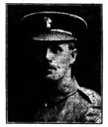

Arthur William “Joey” Parker


Arthur William Parker, known to family and friends as "Joey", was born in Kentish Town in 1878, the eldest child of William Somers Parker, a book publisher, and Hannah Parker. He grew up in Harrow with his six younger siblings and later married Mabel Mary Titchener in 1904. Together they had one son, Derek Arthur Parker.
Civilian Life - Joey was educated at John Lyon School, where he established a reputation as an accomplished sportsman. After leaving school, he worked first for Crédit Lyonnais before spending many years with Messrs. Whitbread & Co., where he was employed as a clerk. Beyond his working life, he remained closely associated with Harrow's sporting community. He played football for Harrow Town, Stanmore and the Old Lyonians Club, and was an accomplished cricketer for Belton Club and later the Crusaders (now Harrow Cricket Club), regularly leading the batting averages. Contemporary accounts recorded that a full record of his sporting achievements would have filled the pages of The Lyonian.
After his school days were over Joey played football for some years with Harrow Town, then in their palmy days, with Stanmore, and, later, with the Old Lyonians Club. To the last game he played, he retained his marvelous quickness of footwork. At cricket for years he played with the Belton Club, and during midsummer holidays he put up some remarkable scores. The Saffrons, at Eastbourne, was one of his happy hunting grounds. He piled up scores there against the best South country eleven. Latterly he played regularly for the Crusaders, now the Harrow Cricket Club, and he usually headed the batting averages. In fact, a full list of his performances with bat and ball would furnish his old school's magazine, The Lyonian, with a remarkable athletic record.
Military Life - In 1916, although approaching the upper age limit for enlistment, Joey volunteered for military service. He served as Private 52032 with the 24th (2nd Sportsman's) Battalion, Royal Fusiliers (City of London Regiment). He spent approximately fifteen months on the front line and, despite being encouraged to accept a commission, remained in the ranks throughout his service. In mid-March 1918, the 24th Battalion was holding frontline trenches in the Vacquerie Centre sub-section of the sector (near the Cambrai/Bapaume front).
While the massive German Spring Offensive did not officially launch until March 21, the preceding weeks were marked by intense, daily trench-mortar bombardments, localized raids, and heavy artillery shelling as both sides jockeyed for position. Private Parker was wounded during these localized frontline exchanges during fighting near the Cambrai–Bapaume front.
He was evacuated to a nearby casualty clearance post or field ambulance unit in the Grevillers sector, where he died of his wounds on 14 March 1918, aged thirty-nine. He was buried in Grevillers British Cemetery, Pas-de-Calais, France (Plot XI, Row B, Grave 11.)
Tributes from his friends His obituary in the Harrow Observer recorded the esteem in which he was held in Harrow, and paints a vivid picture of Joey. “There was no one so well-known as "Joey" Parker, no one more highly respected and loved, of one more strongly imbued with the best traditions of the Lower School of John Lyon.”
“He was a standing example of patriotism. Though 36 years of age he never hesitated when the call came. He saw his duty clearly and did it readily and voluntarily, as he had always done..” the obituary continues “ [He]left behind him the memory of an upright, noble character, for whom the country, and Harrow in particular, has cause to be thankful.”
“To all of us who know him, the thought that we shall never again see his alert, trim figure, and his cheerful smile, gives us more than the momentary pang. His is a memory we will not "willingly let die." That his life, full of hope and full of promise, should thus be cut off, even on the field of honour, is one of the poignant tragedies of this most horrible war."
Our deepest sympathy goes out to his wife—who is the eldest daughter of Mr. J. H. Kitchener, master of Harrow School—and her son, and to his bereaved family, in their loss.